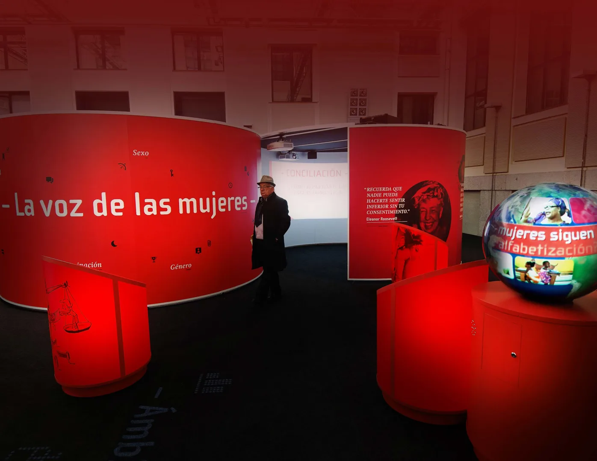

Cultura y museografía
XXI. Un futuro en femenino
Fundación Santiago Dexeus · Madrid y Barcelona
Responsabilidad. Dirección de empresa

01
Contexto
Una exposición sobre la situación de la mujer y los desafíos de la igualdad.
02
Necesidad
Relacionar información, testimonios y participación para abordar un tema social complejo.
03
Estrategia
Se desarrollaron guiones, espacio, piezas audiovisuales e interactivos con la Fundación y especialistas, coordinando las distintas disciplinas del proyecto.
04
Impacto
La exposición se presentó en Madrid y Barcelona e incorporó información, testimonios y recursos participativos sobre la situación de la mujer.

Créditos y alcance
Fundación Santiago Dexeus y especialistas colaboradores. Diseño y realización: Optimus Medina Relay.
¿Qué tienes entre manos?
Podemos empezar por una necesidad concreta o por una idea que aún necesita forma.